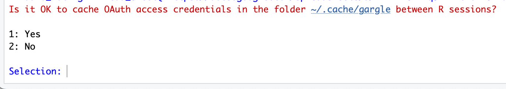
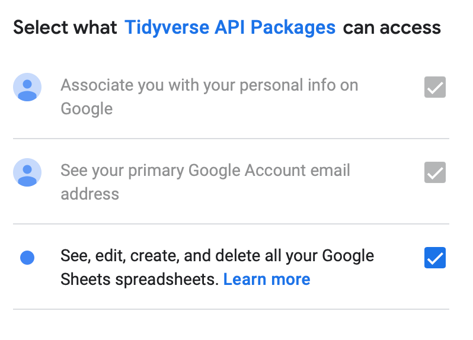
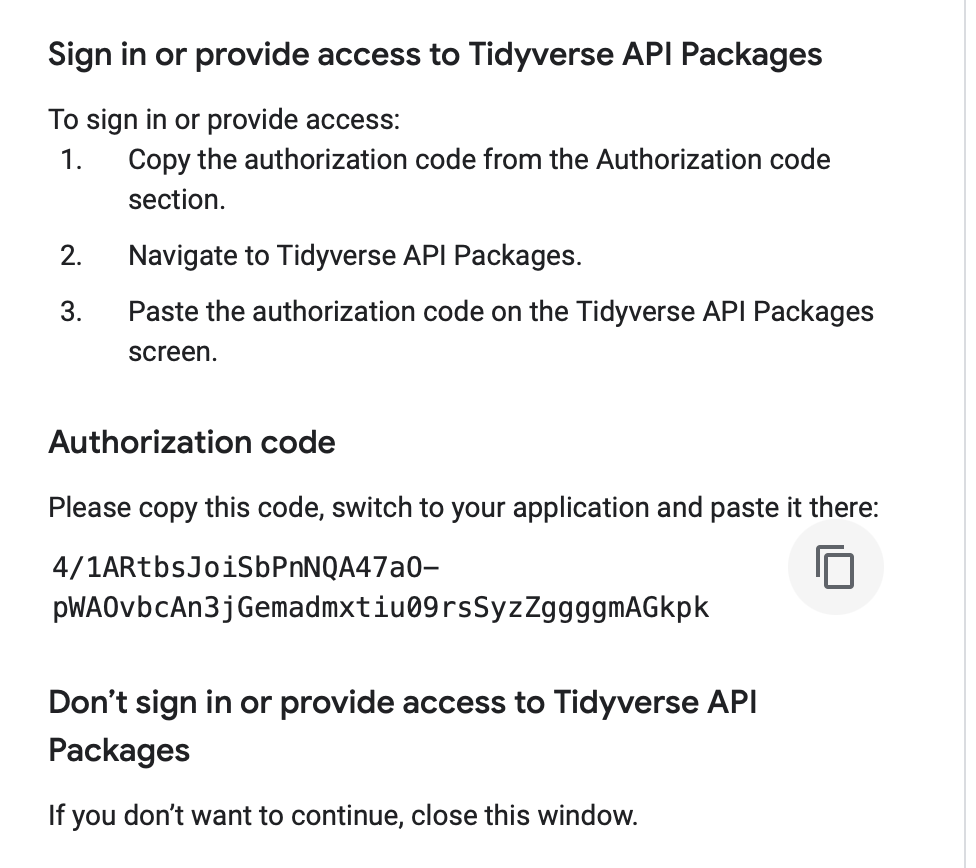

library(tidyverse)
library(googlesheets4)Lab 04 - Tidy Data - Key
Introduction
The goal of this lab is to practice importing, tidying, then visualizing and analyzing data.
Setup
Load packages
Import Data
We’re going to import our data from a google sheet:
gapminder_wide <- read_sheet("https://docs.google.com/spreadsheets/d/1E8u2GL0aCmWiU2AnpNirfUPxWSJBN50Tyrf5ilapwSw/edit?usp=sharing")Authorize tidyverse to use your google account
Type 1 for yes: 
 Copy the authorization code:

Paste it into the console:

Tidy Data Walkthrough
Exercise 1
How many observations and how many variables are in the dataset? What does each row represent? Is the dataset tidy? Enter the code you need to get this information and answer the questions.
glimpse(gapminder_wide)Exercise 2
Spoiler: It ain’t tidy! Tidying data can be really tricky in some cases so we’re going to go through this together.
Let’s look at the data again, but this time we’re going to use the tbl_vars() function from the dyplyr package to just give us a list of all the variables in the dataset.
gapminder_wide %>%
tbl_vars()So, we see from the output above that each variable has a year at the end of its name (e.g., pop_1952). If we’re interested in analyzing these data, we know we don’t want to have multiple columns for each variable (e.g., a life expectancy column for each year). We want ONE life expectancy variable (column) with values recorded for each year for each country in the dataset. So, let’s use the pivot_longer() function from the dplyr package to make our data tidy:
gapminder_tidy <- gapminder_wide %>%
pivot_longer(names_to = c(".value", "year"),
names_sep = "_",
names_transform = list(year = as.integer),
cols = c(-continent, -country))This code looks a little bit different than the pivot_longer code we went over in the lecture. For more information about all of these arguments visit the the pivot longer webpage for the tidyrpackage.
gapminder_tidy %>%
tbl_vars()Visualization and Descriptives
Okay, our data are tidy. Now let’s do some analyzing.
Exercise 3
First, let’s get a sense of our new tidy dataset using the glimpse command:
glimpse(gapminder_tidy)Answer the following:
How many observations are there? 1,704
How many variables? 6
What is the unit of analysis (what does each row represent)? How does this differ from the unit of analysis in the untidy(wide) data you started with?
Country-year. The unit of analysis in the untidy dataset was country.
Next, let’s calculate some basic descriptive statistics to get a sense of our variables.
Exercise 4
What is the average population in the tidy dataset?
gapminder_tidy %>%
summarize(avg_pop = mean(pop, na.rm=TRUE))Exercise 5
Average population for so many countries over many years isn’t super useful to us. How can we come up with a more meaningful average population statistic? Let’s break the data down a bit to find something more interesting. Write and run code to calculate the average population for each year in the dataset.
gapminder_tidy %>%
group_by(year) %>%
summarize(avg_pop_year = mean(pop, na.rm=TRUE))Okay, slightly more useful. A lot more people in 2007 than in 1952!
Exercise 6
Let’s create a visualization of population over time. One thing we could try is visualizing population over time for each continent. Think about which kind of graph would be best for communicating this then write and run the code (HINT: You’re going to need to add group = continent to your aes() arguments to make the graph legible:
gapminder_tidy %>%
group_by(year, continent) %>%
summarize(avg_pop = mean(pop)) %>%
ggplot(aes(x=year, y=avg_pop, color=continent)) +
geom_line()Exercise 7
Okay, let’s explore a couple of relationships in the data. We have data for gdp per capita, population, and life expectancy. Make scatterplots showing the relationship between 1) pop and gdpPercap and 2) gdpPercap and lifeExp.
ggplot(gapminder_tidy, aes(x = pop, y = gdpPercap)) +
geom_point()ggplot(gapminder_tidy, aes(x = gdpPercap, y = lifeExp)) +
geom_point()What do you observe about the relationship between these variables?
Both plots demonstrate a positive relationship between the variables.
Exercise 8 (on your own at home!)
Think of another visualization independently on your own, write the code, run it, and describe what you’ve done!
Submission
Finally, save your html file and submit it to me on Canvas.
And you’re done!